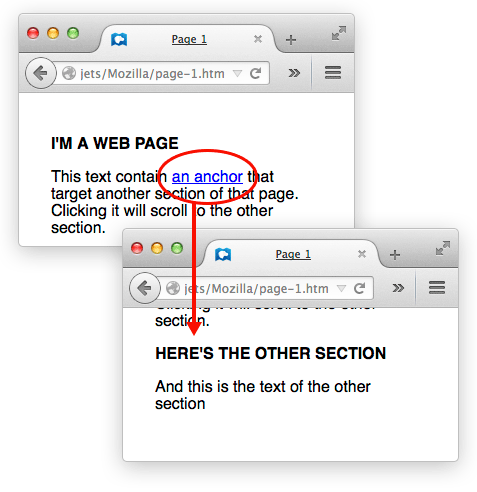

In this article, we'll go over what hyperlinks are and why they matter.
| Prerequisites: | You should know how the Internet works and be familiar with the difference between a webpage, a website, a web server, and a search engine. |
|---|---|
| Objective: | Learn about links on the web and why they matter. |
Hyperlinks, usually called links, are a foundational concept behind the Web. To explain what links are, we need to step back to the very basics of Web architecture.
Back in 1989, Tim Berners-Lee, the Web's inventor, spoke of the three pillars on which the Web stands:
As you can see in the three pillars, everything on the Web revolves around documents and how to access them. The Web's original purpose was to provide an easy way to reach, read, and navigate through text documents. Since then, the Web has evolved to provide access to images, videos, and binary data, but these improvements have hardly changed the three pillars.
Before the Web, it was quite hard to access documents and move from one to another. Being human-readable, URLs already made things easier, but it's hard to type a long URL whenever you want to access a document. This is where hyperlinks revolutionized everything. Links can correlate any text string with a URL, such that the user can instantly reach the target document by activating the link.
Links stand out from the surrounding text by being underlined and in blue text. Tap or click a link to activate it, or if you use a keyboard, press Tab until the link is in focus and hit Enter or Spacebar.
Links are the breakthrough that made the Web so useful and successful. In the rest of this article, we discuss the various types of links and their importance to modern Web design.
As we said, a link is a text string tied to a URL, and we use links to allow easy jumping from one document to another. That said, there are some nuances worth considering:
When you're building a website, focus on internal links, since those make your site usable. Find a good balance between having too many links and too few. We'll talk about designing website navigation in another article, but as a rule, whenever you add a new webpage, make sure at least one of your other pages links to that new page. On the other hand, if your site has more than about ten pages, it's counter-productive to link to every page from every other page.
When you're starting out, you don't have to worry about external and incoming links as much, but they are very important if you want search engines to find your site (see below for more details).
Most links tie two webpages together. Anchors tie two sections of one document together. When you follow a link pointing to an anchor, your browser jumps to another part of the current document instead of loading a new document. However, you make and use anchors the same way as other links.

Links matter both to users and search engines. Every time search engines crawl a webpage, they index the website by following the links available on the webpage. Search engines not only follow links to discover the various pages of the website, but they also use the link's visible text to determine which search queries are appropriate for reaching the target webpage.
Links influence how readily a search engine will link to your site. The trouble is, it's hard to measure search engines' activities. Companies naturally want their sites to rank highly in search results. We know the following about how search engines determine a site's rank:
SEO (search engine optimization) is the study of how to make websites rank highly in search results. Improving a website's use of links is one helpful SEO technique.
Now you'll want to set up some webpages with links.